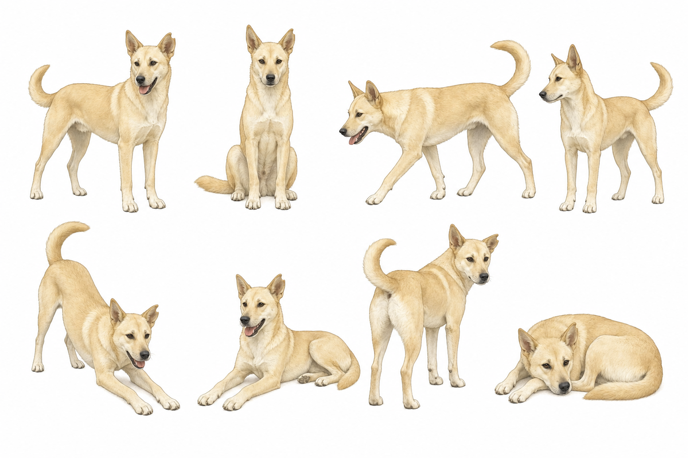
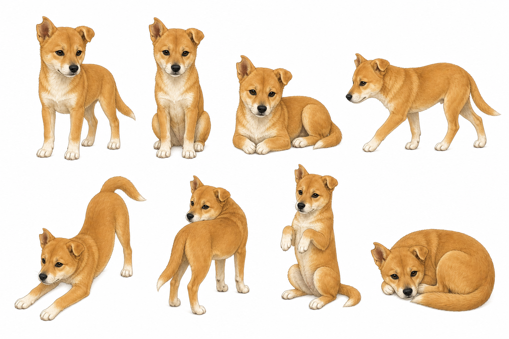
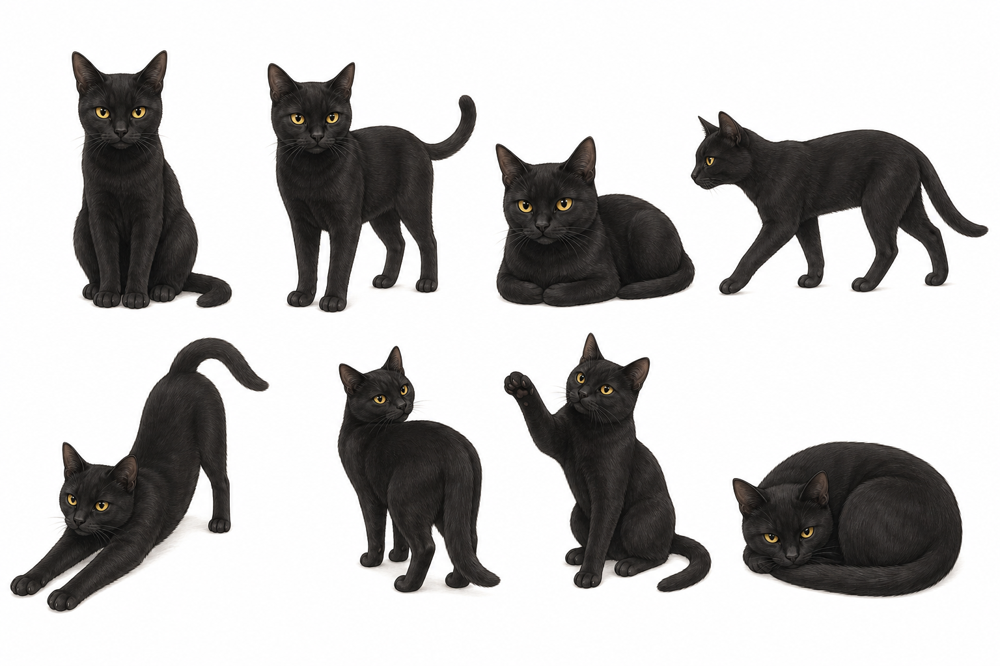

小黄
浅黄大狗，修长体型，直立大耳，上卷尾巴。适合探路、拉路径、守门、发现断点。
为中文文章生成 Ian 风格的怪诞正文配图：纯白背景、黑色手绘线稿、少量红 / 橙 / 蓝中文批注，并固定使用三只宠物作为视觉主角。
这个 skill 的重点不是生成萌宠海报，也不是画正式 PPT 流程图，而是把文章里的判断、流程、结构、状态或隐喻，转成一张清爽、有点怪、但能快速看懂的正文插图。
三只宠物来自本 skill 根目录，图片文件名就是角色名。生成时必须保持宠物样貌和参考图一致，不能只画成“类似的猫狗”。

浅黄大狗，修长体型，直立大耳，上卷尾巴。适合探路、拉路径、守门、发现断点。

橙黄小狗，白胸白爪，一耳立一耳半垂。适合试探、卡住、提问、钻入口。

黑猫，黄眼睛，尖耳朵，细长身体。适合观察、判断、按开关、校验。
使用 Ian / ifan 风格时，三张 PNG 是权威参考，不是灵感图。
小黄.png、小狗儿.png、蒂娜.png。提示词里必须明确包含：
match the provided reference images closely
preserve identity from the reference PNGs
do not invent a generic pet每张图从三只宠物中选择 1-3 只出场。随机组合要服从表达，不要为了随机而牺牲结构清晰度。
| 组合 | 适合场景 |
|---|---|
| 单只 | 一个明确动作、一个判断、一个状态。 |
| 双只 | 对比、协作、拉扯、输入输出、角色分工。 |
| 三只 | 系统分流、闭环、多阶段、共同搬运一个抽象物。 |
小黄：推进、开路、寻找断点、承接路径。小狗儿：试错、卡住、提问、误入入口。蒂娜：判断、审核、观察、按住关键点。小黄 + 小狗儿：执行与试探。小黄 + 蒂娜：推进与审核。小狗儿 + 蒂娜：疑问与纠偏。小黄 + 小狗儿 + 蒂娜：分流、闭环、多阶段协作。可以加少量短对话，但不能变成剧情漫画。
小黄：“走这边”
小狗儿：“我试试”
蒂娜：“先校验”Use $ian-pet-illustrations 为“A 发送一条消息到 B 接收一条消息”的过程画一张 Ian 宠物风格正文配图，要求详细 TCP/IP。必须保持小黄、小狗儿、蒂娜的样貌和参考图片一致。Use $ian-pet-illustrations 分析这篇文章适合在哪些段落后配图，给我 4-6 张 shot list，不要先生成图片。Use $ian-pet-illustrations 画一张“缓存击穿”的正文配图，只用小狗儿和蒂娜。小狗儿负责试探入口，蒂娜负责按住校验开关。Generate one standalone 16:9 horizontal Chinese article illustration.
Visual DNA:
Pure white background. Minimalist black hand-drawn line art. Slightly wobbly pen lines. Lots of empty white space. Sparse red/orange/blue handwritten Chinese annotations.
Pet identity requirement:
Use the provided reference PNGs for 小黄, 小狗儿, 蒂娜. Match the provided reference images closely. Preserve identity from the reference PNGs. Do not invent a generic pet.
Selected pet combination:
{小黄 / 小狗儿 / 蒂娜 / 小黄+小狗儿 / 小黄+蒂娜 / 小狗儿+蒂娜 / 小黄+小狗儿+蒂娜}
Core idea:
{这张图要表达的核心意思}
Composition:
{宠物在哪里、正在做什么、主要物件是什么、信息如何流动}
Chinese labels:
{短标注 1} / {短标注 2} / {短标注 3}
Dialogue bubbles if useful:
{宠物名：“短句”；没有必要就 none}Images of cats and dogs/
├── SKILL.md
├── README.md
├── pet-roster.md
├── 小黄.png
├── 小狗儿.png
├── 蒂娜.png
├── agents/
│ └── openai.yaml
└── references/
├── composition-patterns.md
├── pet-protagonists.md
├── pet-roster.md
├── prompt-template.md
├── qa-checklist.md
└── style-dna.mdpet-roster.md。references/pet-roster.md。SKILL.md 中的固定角色名和参考图路径。